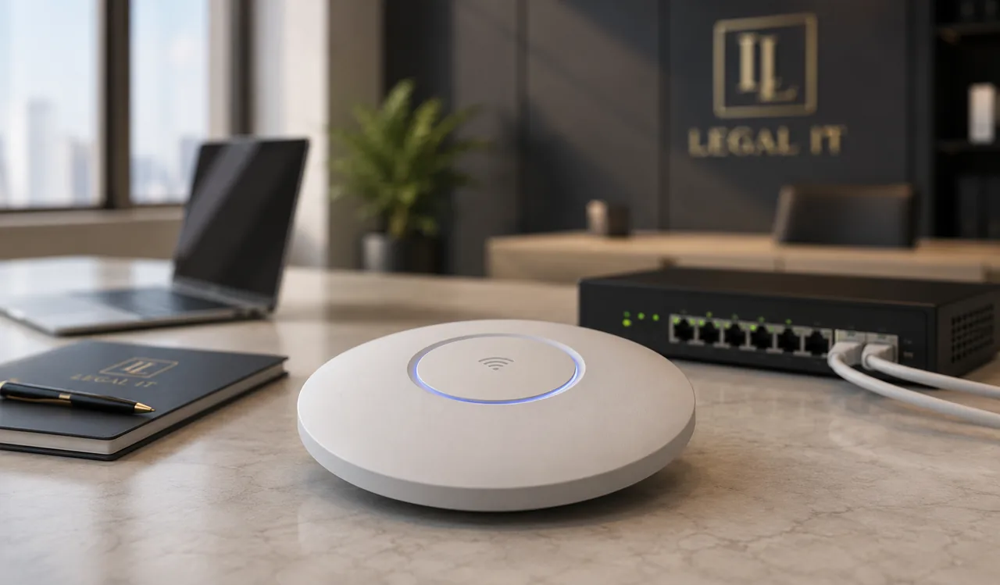

Onderdeel 01
Managed Internetdiensten
Een stabiele en veilige internetverbinding is essentieel voor iedere organisatie. Storingen, prestatieproblemen of beveiligingsrisico’s kunnen directe gevolgen hebben voor de productiviteit en dienstverlening. Met onze Managed Internetdiensten bent u verzekerd van een professioneel beheerde internetomgeving die optimaal presteert en continu wordt bewaakt.
Wij nemen het beheer van uw internetverbindingen uit handen, zodat u zich kunt concentreren op uw kernactiviteiten.
- Continu bewaakt en proactief beheerd
- Optimale prestaties en stabiliteit
- Veilig en betrouwbaar verbonden
Onderdeel 02
Managed Firewall
Cyberdreigingen worden steeds geavanceerder. Een firewall vormt de eerste verdedigingslinie van uw organisatie, maar alleen een correct geconfigureerde en continu beheerde firewall biedt optimale bescherming. Met onze Managed Firewall nemen wij het volledige beheer, onderhoud en de monitoring van uw firewallomgeving uit handen.
- Correcte configuratie en volledig beheer
- Continue monitoring van uw firewallomgeving
- Onderhoud en tijdige updates

Netwerk & wifiOnderdeel 03
LAN & WiFi
Een betrouwbaar netwerk vormt de basis van iedere moderne organisatie. Medewerkers verwachten overal toegang tot applicaties, bestanden en online diensten, ongeacht of zij werken op kantoor, in een vergaderruimte of vanuit een spreekkamer. Met professionele LAN- en WiFi-oplossingen zorgt u voor optimale prestaties, maximale beschikbaarheid en een veilige netwerkomgeving.
Wij ontwerpen, implementeren en beheren netwerken die aansluiten op de behoeften van uw organisatie, vandaag én in de toekomst.
- Overal toegang: kantoor, vergaderruimte of spreekkamer
- Optimale prestaties en maximale beschikbaarheid
- Veilige netwerkomgeving
- Ontwerp, implementatie én beheer
Benieuwd wat dit voor uw kantoor betekent?
We denken graag met u mee en stellen een voorstel op maat samen.